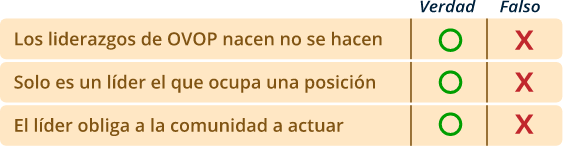

Introducción
El Proyecto OVOP Colombia “Mi Pueblo, Mi Producto, Mi Orgullo”, se ha venido trabajando en Colombia desde el año 2014 en la construcción de una plataforma para el desarrollo local, la cual basa sus acciones en dos lineamientos estratégicos:
- El mejoramiento de la competitividad de los productos territoriales y,
- El aumento de la participación de los actores comunitarios a nivel local, generando el desarrollo local incluyente.
En la ejecución del proyecto, se han recolectado las buenas prácticas y lecciones aprendidas para aumentar la participación y fortalecer los productos con identidad territorial.
Este ejercicio ha generado un papel fundamental en los lideres para dinamizar y promover el desarrollo en su territorio. Ellos han realizado las actividades comunitarias por sí mismos y han motivado a otras personas para trabajar juntos.
1. Guía para la ideación de Producto
Por este motivo, esta guía se enfocará en los siguientes temas:
- Confirmar el concepto de OVOP Colombia retomando los tres principios y el enfoque de participación comunitaria,
- Conocer las características de los líderes de OVOP Colombia y el concepto de liderazgo colectivo,
- Elaborar el proyecto hacia el sueño colectivo,
- Fortalecer nuestro orgullo y confianza y,
- Construir una buena práctica para el desarrollo comunitario incluyente.
Estos temas se han seleccionado como resultado de los talleres de capacitación de los líderes durante el Proyecto de OVOP Colombia.
Objetivos de la guía
General
OVOP es diferente a la estrategia de desarrollo comunitario convencional, la cual usualmente se implementa con la ayuda planificada por el gobierno sin involucrar a la comunidad. El enfoque de OVOP es en sentido contrario, ya que es desde abajo hacia arriba y se enfatiza la participación a nivel comunitario.
En OVOP, los miembros de cada territorio se convierten en actores para generar el cambio positivo en su comunidad, promoviendo una visión territorial basada en procesos de autogestión y creatividad, pensando globalmente, actuando localmente y desarrollando los recursos humanos.
En este sentido, es importante que los líderes tengan un mejor entendimiento sobre OVOP para que su contribución sea efectiva y genere avances en la comunidad.
Por tal motivo, esta guía tiene por objetivo: Orientar a los instructores de OVOP Colombia y transferir el conocimiento a la comunidad, para que fortalezcan las competencias de los líderes comunitarios y estos a su vez, puedan convertirse en líderes de OVOP Colombia asumiendo la labor de promover el desarrollo comunitario.
Preparación
1.1
Módulos
Esta guía consta de cinco módulos para orientar a los instructores de OVOP Colombia y transferir el conocimiento a las nuevas comunidades que desean iniciar OVOP Colombia en su territorio. Se recomienda comenzar desde el módulo 1; no obstante, lo anterior se podrá aplicar a uno o varios módulos dependiendo de las necesidades de la comunidad.
| Módulo | Contenido |
| 1 | Generalidades de OVOP |
| 2 | Liderazgo colectivo |
| 3 | Herramientas para fortalecer orgullo y confianza |
| 4 | Planificación participativa para el sueño comunitario |
| 5 | Construcción de buenas prácticas |
| Parte | Contenido | Tiempo |
| 1 | Concepto clave | 20 minutos |
| 2 | Práctica | 1 hora |
| 3 | Estudio de caso | 20 minutos |
| 4 | Evaluación | 20 minutos |
1.2
Participantes
El facilitador de OVOP Colombia invita al grupo base con los líderes comunitarios. Es ideal invitar a los líderes de un mismo municipio, pero se pueden mezclar invitados de varios municipios también.
El facilitador de OVOP Colombia debe tener en cuenta el balance de invitados por género, la diversificación de los sectores e incluir los grupos vulnerables; todo depende de las características de la comunidad.
Todos los módulos se realizarán de forma participativa; es recomendable invitar un número de personas que sea adecuado para trabajar, se sugiere una cantidad máxima de 20 personas por taller.
1.3
Logística
El salón debe tener: capacidad para trabajar con más de 20 personas, mobiliario (sillas, pupitres, mesas), pizarra, marcadores/colores, lápices, cinta de enmascarar, papelógrafos para escribir y colocar en la pared, proyector de vídeo, etc.
Los módulos
2.1
Módulo 1: Generalidades de OVOP
Parte I: Conceptos claves
En la parte I, el facilitador de OVOP Colombia presentará el concepto básico de OVOP, para orientar a los líderes de la comunidad, por lo cual se recomienda que los facilitadores estudien previamente el concepto básico de OVOP junto con el documento estratégico y otros materiales.
A continuación, se confirma el concepto básico de OVOP (Fuente: “Documento Estratégico de Desarrollo Local Incluyente OVOP Colombia”).
| Materiales OVOP |
| Documento Estratégico de Desarrollo Local Incluyente OVOP Colombia |
| Brochure “Mi Pueblo, Mi Producto, Mi Orgullo |
| Manual de participación y desarrollo comunitario |
| Servicio Nacional de Aprendizaje SENA http://www.sena.edu.co/esco/sena/Paginas/ovop_colombia.aspx |
¿Qué es OVOP?
El movimiento OVOP (One Village, One Product) corresponde a una estrategia de desarrollo local que surgió en la década de los 60 en la Prefectura de Oita – ubicada en la parte sur del Japón –. En Colombia, esta estrategia se inició en el año 2010.

OVOP, es una estrategia de desarrollo local alternativo, que busca el mejoramiento de la competitividad y el aumento de la participación, mediante el despertar del orgullo, el amor y la identidad de las comunidades por su territorio y sus productos.
En este sentido, OVOP parte de la premisa que cada territorio o cada localidad, cuenta con multiplicidad de recursos que pueden ser tangibles o intangibles (fiestas, eventos, arquitectura, paisajes, entre otros.), los cuales pueden convertirse en productos con mucho potencial y con impacto global, permitiendo consolidar su territorio como único.
Tres principios de OVOP
OVOP desde sus inicios ha fundamentado su acción en tres principios:
- Desarrollo de recursos humanos,
- Origen local e impacto global y,
- Autogestión y creatividad.
Con ellos, pretende empoderar gradualmente a las comunidades de tal manera que transformen su realidad, convirtiéndolos en actores de su propio desarrollo.
Desarrollo de recursos humanos
Formación y cualificación del recurso humano para la gestión del desarrollo local, lo cual implica que las comunidades desarrollen competencias en su saber, saber hacer y saber ser, que permitan el aprovechamiento de los recursos existentes y del capital humano de su territorio.
Origen local e impacto global
productos identificados a las comunidades locales, que se caracterizan por ser propios de una determinada zona y por sus características se diferencia de otros en diversas zonas del país. Los productos pueden ser tangibles o intangibles.
Autogestión y creatividad
Iniciativa de las propias comunidades que utilizan de manera sostenible los recursos propios (naturales, económicos, sociales, culturales) para desarrollar productos que se distinguen por ser el fruto de la imaginación, creatividad y habilidad de las personas que habitan una determinada zona o comunidad en el territorio del país.
Basados en estos tres principios, los actores de los diferentes grupos desarrollan las capacidades necesarias para mejorar la competitividad de los productos de OVOP y promueven el desarrollo comunitario de su territorio.
El eslogan de OVOP
Es momento de conocer el eslogan de OVOP, sobre el cual se ha creado “Mi Pueblo, Mi Producto, Mi Orgullo” como el eslogan de OVOP Colombia.
Enfoque de la participación comunitaria en OVOP
- OVOP busca la participación comunitaria incluyente en relación con los recursos locales, que se sienta orgullo y se genere conciencia sobre la importancia de la construcción colectiva de una visión (sueño colectivo).
- En los procesos de desarrollo comunitario, OVOP pone énfasis en la mayor inclusión de la población comunitaria, tal como: las mujeres, los jóvenes, adultos mayores y personas en condición de discapacidad, indígenas, grupos étnicos, víctimas del conflicto, excombatientes, entre otros.
- A partir de los procesos de participación comunitaria, se espera que en la comunidad se genere corresponsabilidad, proactividad y lazos de confianza, tanto a nivel interno como externo de su territorio; es decir, con las instituciones públicas o privadas, identificándolas como aliadas estratégicas en sus procesos de desarrollo.
- Articulación efectiva de la oferta y la demanda, OVOP le apuesta a generar o fortalecer redes al interior de la comunidad y fuera de ella, que permitan una articulación efectiva entre la oferta y la demanda local existente en su territorio, de forma tal que den paso a revitalizar el territorio.
Parte II: Taller práctico
En la parte II, se va a realizar el taller que tiene el objetivo de profundizar en el entendimiento del concepto básico de OVOP. Para ello:
- Los participantes se dividirán en dos grupos (del mismo municipio o mixto). Cada participante, iniciará dibujando un bien o producto (arquitectura, fiesta, naturaleza, etc.) que se encuentra en su comunidad y que lo haga sentirse orgulloso o especial. (10 minutos).
- Una vez lo hayan dibujado en la hoja, los integrantes expondrán su dibujo a los otros participantes en el mismo grupo, explicando por qué sienten orgullo o consideran especial ese bien o producto. (20 minutos).
- Posteriormente, cada grupo escogerá el bien o producto que les haya parecido más impactante. Una vez que lo hayan escogido, se le pedirá a cada grupo que dinamice o promueva el producto a partir del aumento de la participación e inclusión social y competitividad. (15 minutos).
- Cada grupo compartirá o socializará su producto. (15 minutos).
¡Ha llegado la hora del taller! Recuerde que al igual que los talleres de los anteriores módulos, este es un espacio necesario para conocer el paso a paso al momento de abordar una comunidad, con el objetivo de profundizar en el entendimiento del concepto básico de OVOP. Además, aportará a la consolidación de la propuesta final de este proceso de formación.
| Nombre del producto o servicio Ejemplo: Festival del Algodón |
|
|
|
Parte III: Estudio de caso
En la parte III, se mostrará el video producido por el DNP “Estrategia alternativa para el desarrollo local incluyente” y el video IRODORI (Decoración Colorida). IRODORI tiene por objetivo hacer un acercamiento a Kamikatsu, un municipio del departamento de Tokushima, Japón. En el video se muestra su proceso de recuperación: de la pobreza al desarrollo comunitario, a través del aprovechamiento de las hojas de los árboles.
Es importante que observe los videos:
Parte IV: Retroalimentación
En este espacio los participantes realizarán primero una reflexión y después trabajarán el formato de evaluación.
Se supone que el nivel de comprensión de los participantes podría ser variado, dependiendo de la dinámica del municipio (considerando el nivel de educación y la experiencia de la comunidad). Los facilitadores deben reflejar el resultado de la evaluación y hacer ajustes para mejorar el contenido expresado.
Los invito a reflexionar haciendo una autoevaluación, con el “formato evaluación del módulo 1”, el cual se encuentra en los materiales complementarios asociados a este componente formativo:
2.2
Módulo 2: Liderazgos colectivos
Parte I: Concepto clave
En el módulo 2, se abordará el concepto de “liderazgos colectivos” que es clave para lograr el mayor avance en el desarrollo comunitario.
¿Qué significa “liderazgos colectivos”?
En el proceso del desarrollo comunitario, se encuentra uno o varios líderes, que tienen cierta influencia en el territorio.
La estrategia OVOP Colombia, se enfoca en que varios líderes tomen el liderazgo de diversas formas, para mover la comunidad hacia una visión acordada conjuntamente, en liderazgo colectivo.
En el liderazgo colectivo se gestionará la diversidad de la comunidad y se dará prioridad a la influencia positiva para el territorio. No se debe obligar a la comunidad a actuar. Los líderes deben fomentar la capacidad personal, para que se generen sinergias entre los líderes en el proceso de colaboración conjunta; esto también ayudará a generar la inclusión social.
¿Cuáles de estas frases son mitos sobre el liderazgo?
- Entienden y creen en OVOP: aunque una persona sea carismática, si no cree en la metodología, difícilmente podrá ser líder de esta.
- Creen y amplían la visión de sus comunidades: permiten que sus comunidades visualicen sus posibilidades personales y colectivas en el territorio.
- Conocen de su propia comunidad: OVOP no es únicamente para mejorar los productos o servicios de la comunidad, es desarrollo incluyente.
El conocimiento de las personas de su propio territorio es fundamental para lograrlo.
- Actúan por sí mismos: buscan apoyo para fortalecer el conocimiento en la comunidad y aumentan las actividades tales como ferias, eventos y charlas para estudiantes.
En la implementación del Proyecto OVOP Colombia, se ha analizado a los líderes que han contribuido al desarrollo comunitario y se han identificado tres tipos de líderes:
- líder comunitario.
- líder empresarial.
- líder institucional.
En la experiencia del Proyecto de OVOP Colombia, se han observado dificultades para generar buenos resultados con solo un líder. En cambio, contando con varios líderes de diferentes tipos, colaborando con los miembros de la comunidad y las entidades públicas generando sinergias, hay mayor probabilidad de lograr el objetivo de manera efectiva. Los tipos de líderes que pueden contribuir al desarrollo local son los siguientes:
¿Cómo avanzar del liderazgo personal al liderazgo colectivo?
Los líderes de diferentes tipos funcionan generando sinergia colaborando juntos para lograr su objetivo.

Construcción del liderazgo colectivo para promover el desarrollo comunitario OVOP Colombia.
A continuación, se observan los tres grupos de actividades que cada líder debe realizar para construir liderazgo colectivo OVOP Colombia:
Parte II: Taller práctico “Caso de municipio Peor Es Nada”
En la parte II, se va a realizar el taller que presenta la comprensión del papel de líder OVOP y el funcionamiento de los liderazgos colectivos.
Los participantes conformarán varios grupos, por municipios o mixtos, dependiendo de la cantidad de representantes. Los participantes leen el caso siguiente: “Caso de municipio Peor Es Nada”. (10 minutos).

Cada participante se identifica con el tipo de líder con el que se sienta cómodo y escribe su nombre en el formato siguiente. Después, cada grupo de liderazgo determina tres estrategias para solucionar el problema. (20 minutos).
Nota: a veces, los participantes no saben qué tipo de líderes podrían ser. En este caso, los facilitadores deben motivar a los participantes para que seleccionen aquel tipo con el cual se sientan naturalmente cómodos.
Cuando un participante se identifica con dos perfiles, debe elegir uno. En caso de no haber sido elegido alguno de los tres perfiles, uno de los participantes debe desarrollar este rol.
En este taller, es normal que, en cada grupo de líderes, no resulte el mismo número de personas. (Por ejemplo: podría haber más personas que se identifiquen como líderes empresariales, y menos como líderes comunitarios).
Teniendo en cuenta los resultados anteriores, se discutirá quién asumirá la responsabilidad de cada estrategia a aplicar, las personas o los grupos de la comunidad o las entidades públicas y se asignará los recursos y el tiempo para trabajar. (15 minutos).
Por último, los participantes socializarán los resultados y responderán las siguientes preguntas. (15 minutos):
- ¿Cuál es la característica de su estrategia? (Compárela con la de los otros grupos) ¿Ha prevalecido el resultado de ganar/ganar en cada grupo de líderes?
- ¿Qué tipo de líder logró el acuerdo más efectivo para solucionar el problema?
- ¿Para qué tipo de líder fue más difícil lograr el acuerdo de solución al problema?
- En cuanto al tipo de líder que se ha seleccionado, ¿se sintieron cómodos al tomar este rol?
- ¿Ha cambiado de opinión sobre su rol, antes y después del ejercicio? (Por ejemplo, un participante identificaba su rol como líder comunitario, pero a través de este ejercicio, se dio cuenta de que tiene otras características.
Parte III: Estudio de casos
A través de las presentaciones de líderes de OVOP Colombia, se podrá tener un acercamiento al liderazgo colectivo, como un ejemplo de la iniciativa. Se debe organizar un encuentro para escuchar las experiencias de los líderes de otros municipios (testimonio en vivo o videos).
A continuación, se presenta un caso de iniciativa de Villavieja y otro de Tierradentro, en los que se cuentan sus experiencias de liderazgo colectivo; así mismo, se comparten sus logros y obstáculos en el proceso de desarrollo local, además de algunos consejos y sugerencias para el desarrollo del liderazgo en su territorio.
Parte IV: Retroalimentación

2.3
Modulo 3. Elaboración del proyecto para sueño colectivo
En este módulo, el facilitador explica que, en el proceso de OVOP Colombia, la comunidad comparte la visión de desarrollo como sueño colectivo. Además, se aprenden los puntos importantes para elaborar el proyecto de OVOP Colombia, de manera colectiva.
Parte I: Conceptos clave
En la práctica de OVOP Colombia, cada comunidad desarrolla su Sueño colectivo (ver Guía para la construcción del sueño colectivo), el cual es una visión compartida por toda la comunidad, acerca de cómo quiere construir su territorio. Una vez la comunidad ha desarrollado su sueño colectivo, este se convierte en realidad, a través del proceso de formulación del proyecto participativo.
OVOP Colombia está orientado a estimular y fomentar las acciones participativas, de forma tal que desarrollen todo su potencial colectivo en pro del desarrollo de su territorio.
Parte II: Taller práctico “Elaboremos un proyecto juntos para el futuro de nuestro territorio”
En este taller, se va a trabajar un ejercicio para elaborar un proyecto de manera participativa que podrá contribuir en la construcción del sueño colectivo de la comunidad. El objetivo de este ejercicio es fortalecer la capacidad de trabajo colectivo entre los líderes de la comunidad y sus aliados (las entidades gubernamentales).
Los participantes del taller conforman varios grupos de trabajo. Si vienen de varios municipios, fórmese el grupo por municipio. Si todos los participantes vienen del mismo municipio, fórmese grupos de más o menos cinco personas. (5 minutos).
Los facilitadores van a explicar los siguientes puntos para trabajar en la elaboración del proyecto. (10 minutos):
- Sueño colectivo: visualizar cómo les gustaría ver su comunidad dentro de cinco años.
- Objetivo: seleccionar uno de los sueños, como el objetivo del proyecto.
- Actividad: determinar 3 actividades para lograr el objetivo.
- Sub-actividad: Dividir las actividades en sub-actividades. (Ejemplos: grupo de mujeres, campesinos, jóvenes, etc.).
- Responsable: elegir una o dos personas como responsables de cada actividad y sub-actividad; esta se hará cargo de la realización o de la gestión de dicha actividad y sub-actividad.
- Aliados: identificar cuál entidad o entidades (ejemplos: misma comunidad, asociaciones, municipalidad, gobernación, etc.) dentro de su territorio, pueden prestar asesoría técnica o dar algún tipo de recurso para la ejecución de la actividad.
Cada grupo trabajará en un pliego de papel bond, llenándolo de acuerdo con el siguiente formato. (25 minutos).
Socializar o compartir el resultado a los otros participantes. (20 minutos).
Parte III: Estudio de casos
Los facilitadores comparten algunos proyectos que han contribuido a la construcción del sueño colectivo de otros municipios, para ampliar el conocimiento.
Parte IV: Retroalimentación
2.4
Módulo 4: Fortalecimiento nuestro orgullo y confianza
En OVOP Colombia, generar el sentimiento de orgullo y confianza sobre cada pueblo es básico y para los líderes conocer las técnicas es fundamental. En este módulo, se abordan las técnicas para fortalecer nuestro orgullo y confianza y su aplicación en la práctica.
Parte I: Concepto clave
En el módulo 4, el experto o instructor o responsable desarrollará la técnica para fortalecer el orgullo y la confianza de la comunidad.
Fortalecimiento del orgullo y de la confianza de la comunidad
Desde el punto de vista de la participación, se pone valor agregado al producto OVOP, a través del trabajo colectivo expresado en el fortalecimiento del orgullo y de la confianza de la comunidad y la construcción de redes de solidaridad intracomunitarias o interinstitucionales.
En este proceso, la participación concertada y organizada de todos los actores sociales existentes en dicho territorio, debe estar orientada al desarrollo y/o innovación de productos mediante el fortalecimiento del orgullo y la generación de confianza de la comunidad.
Fortalecer la confianza, significa que:
- Redes de solidaridad: espacio de intercambio de ideas, información entre los actores comunitarios permitiendo la transformación de sus recursos en productos.
- Valor agregado: desarrollo de una estrategia colectiva sobre un producto o servicio.
Es preciso confirmar las palabras clave para entender el orgullo y la confianza:
Taller práctico “Construimos nuestro orgullo y confianza”
En este taller, se van a identificar los productos basados en el eslogan de OVOP Colombia: “Mi Pueblo, Mi Producto, Mi Orgullo”.
Los participantes conforman grupos de trabajo. Si todos los participantes vienen del mismo municipio, el grupo puede conformarse con cinco personas. (5 minutos).
Cada grupo muestra las características del municipio (la iniciativa) basado en el eslogan de OVOP “Mi Pueblo, Mi Producto, Mi Orgullo”. Se trabajará en un pliego de papel bond (20 minutos).
Después, cada grupo socializará o compartirá su resultado a otros grupos. (20 minutos).
Luego de la socialización, los participantes reflexionarán sobre los siguientes puntos. (15 minutos):
- ¿Se descubrieron nuevos productos o servicios en su comunidad?
- ¿Cuáles son los productos o servicios que pueden convertirse en el producto único de su comunidad?
- ¿De qué manera se debe aumentar el orgullo o la calidad de los productos OVOP?
Parte III: Las herramientas para fortalecer nuestro orgullo y confianza
En la parte III, se presentan las siguientes herramientas para fortalecer el orgullo y la confianza comunitaria. Estas herramientas tienen efectos en las comunidades que quieren promover y fortalecer su producto OVOP seleccionado:
Parte IV: Retroalimentación
2.5
Módulo 5: Construyamos buenas prácticas para el desarrollo comunitario incluyente
En el módulo 5, se abordará el concepto del ciclo de PHVA (Planificar, Hacer, Verificar, y Actuar), el cual será necesario para que la comunidad administre el Plan de Acción Comunitario.
Parte I: Conceptos clave
En la ejecución de OVOP Colombia, los líderes de la comunidad van a elaborar el plan de acción (ver Guía para la construcción del sueño colectivo). Una vez que la comunidad lo tenga, se aplicará el ciclo de PHVA - Planificar, Hacer, Verificar y Actuar.
- Planificar: definir objetivos, actividades, personas responsables, aliados y duración del proyecto. Establecer acuerdos de trabajo con los aliados.
- Hacer: realizar las actividades contenidas en el Plan de Acción Comunitario Participativo.
- Verificar: dar seguimiento al plan de acción, revisar los avances y resultados del cumplimiento de las actividades del plan de acción.
Verificar si las actividades planificadas pueden lograr el objetivo del plan de acción, de acuerdo con el tiempo y recursos planificados.
En caso de que las acciones implementadas hasta el momento no hayan contribuido al logro del objetivo, será necesario ajustar la ruta o las actividades o inclusive, el mismo sueño colectivo.
- Actuar: realizar los ajustes en términos de: tiempo, recursos, contenido de las actividades, duración, etc.
Parte II: Taller práctico “Construimos buenas prácticas para el desarrollo comunitario incluyente”
OVOP Colombia tiene por objetivo promover el desarrollo comunitario incluyente. En la parte II, se va a elaborar un pequeño proyecto, que puede contribuir al fortalecimiento del trabajo colectivo -incluyendo los grupos vulnerables-, aumento de confianza de la comunidad y generar una buena práctica en ella.
Se conformará un grupo de trabajo. Si los participantes vienen del mismo municipio, se dividirán en subgrupos. Si los participantes vienen de varios municipios, es mejor conformar grupos por cada municipio. (10 minutos).
Cada grupo presentará la idea del proyecto y seleccionará uno para un grupo vulnerable, por ejemplo: mujeres, jóvenes, campesinos, entre otros. (10 minutos).
Se trabajará en un pliego de papel bond: las actividades específicas, responsable, aliados estratégicos, recursos (técnicos/financieros) y tiempo de ejecución. (20 minutos).

Se socializará o compartirá el resultado a otros grupos. (20 minutos).
Parte III: Estudio de casos
Los facilitadores presentarán ejemplos de otros municipios como referencia.
Por ejemplo: en el corregimiento de La Virginia, en el municipio de Calarcá, del departamento del Quindío, los líderes en su comunidad formularon un proyecto para atraer turistas, que incluyó embellecimiento de las fachadas y casas, un mercado de mujeres campesinas y establecimiento de una ruta gastronómica con platos típicos de la región.
Parte IV: Retroalimentación
5. Conclusión
Esta guía ha sido formulada con base en el resultado de los talleres de capacitación de los líderes. La mayoría de los participantes están motivados para promover el desarrollo local con OVOP Colombia. Con este conocimiento aprendido, ellos se sienten con más confianza como actores principales para promover su desarrollo comunitario incluyente.
Esta guía para fortalecer a los líderes debe utilizarse paralelamente con el documento de:
- Estrategia de Desarrollo Local Incluyente OVOP Colombia.
- Otras guías mencionadas anteriormente.
Es importante que los facilitadores lean la guía para la promoción de OVOP antes de entrar al territorio.
Introducción
El desarrollo local en Colombia es fundamental para generar un proceso de cambio y crecimiento territorial en términos económicos, sociales, culturales y ambientales; en este sentido, OVOP es un enfoque de desarrollo local que consiste en la identificación, descubrimiento o redescubrimiento de la potencialidad del territorio, en términos culturales, sociales, ambientales, arquitectónicos, productivos, turísticos entre otros., como elementos que puestos en valor reactivan la economía local, permitiendo una sostenibilidad social, cultural y económica de las personas en su territorio.
En OVOP Colombia, el concepto de “Mi Pueblo, Mi Producto, Mi Orgullo”, comprende tres componentes importantes para el desarrollo territorial: «Mi Pueblo» hace referencia a (el/los) territorio(s) en el (los) que la comunidad trabaja para alcanzar su «sueño colectivo».
«Mi Producto» se refiere al producto que caracteriza el territorio.
«Mi Orgullo» está relacionado con la identidad y el orgullo que la comunidad siente por su territorio y sus respectivos productos.
En este contexto, el Servicio Nacional de Aprendizaje SENA con el apoyo de la Agencia de Cooperación Internacional del Japón, diseñaron una metodología para la implementación de OVOP en los territorios, lo que se fundamenta en una serie de pasos distribuidos en 4 fases, las cuales están contenidas en dos diseños y desarrollos curriculares denominados Orientación en la Metodología One Village - One Product – Colombia dirigida a instructores y desarrollo local incluyente bajo el enfoque Mi Pueblo, Mi Producto, Mi Orgullo encaminada al fortalecimiento de las comunidades.
En esta guía, se explicarán las actividades a realizar en el Plan de Acción Comunitario, contenido dentro de la fase de creación de valor de la ruta metodológica, la cual busca definir actividades que permitan alcanzar el sueño colectivo a partir de los productos identificados.
2. Guía para la elaboración del plan de acción comunitario
Objetivos de la guía
General
Brindar a los interesados insumos conceptuales y metodológicos, en la construcción participativa del Plan de Acción Comunitario bajo el enfoque OVOP Colombia.
Específicos
- Aprender a elaborar un plan de acción para alcanzar el sueño colectivo teniendo en cuenta los tres componentes: competitividad de los productos, participación comunitaria e inclusión social y aspecto organizacional.
- Crear un espacio de interacción y concertación que permita la reconstrucción del tejido social teniendo como base una perspectiva territorial comunitaria.
Conceptos de referencia
El Plan de Acción Comunitario es una herramienta básica de planificación participativa y comunitaria que ayuda a concretar la ruta de trabajo de la iniciativa hacia el alcance del sueño colectivo. En el plan de acción se definen actividades, responsables y tiempos de cumplimiento, en el que los actores y líderes comunitarios, participaran activamente para alcanzar el sueño colectivo a partir de los recursos disponibles “Mi Producto” OVOP.
En OVOP Colombia, la elaboración del Plan de Acción Comunitario tiene tres componentes: competitividad de los productos o creación de valor, participación comunitaria e inclusión social o comunidades de práctica y mecanismo de gestión, donde la comunidad tendrá que identificar y concertar actividades encaminadas en procesos de autogestión y cogestión que permita la revitalización del territorio hacia el logro de un sueño colectivo basado en el enfoque OVOP.
En este sentido, planear bajo un enfoque OVOP, significa que las comunidades accionen el principio de autogestión y creatividad; es decir, estimular y fomentar la acción participativa de las mismas, de forma tal que desarrollen todo su potencial colectivo en pro del desarrollo de su territorio.
Lo anterior implica actuar bajo principios de corresponsabilidad entre pares comunitarios y de estos con las entidades de su territorio, de forma tal que, de manera conjunta se busquen la soluciones a situaciones socialmente problemáticas de su territorio.
Desde el enfoque OVOP, se debe partir del potencial que tiene el territorio, no desde lo que carece el mismo; es decir, aprovechar el máximo de potencial de los recursos humanos, físicos y culturales existentes en el territorio, para la consecución del sueño colectivo.
Planear, desde el enfoque OVOP, también supone aplicar la perspectiva de backcasting, que supone una estrategia de planeación a largo plazo donde se trabaja primero la visión o sueño al que las comunidades quieren llegar, para desde ahí volver al presente, desde donde partirán con el fin de alcanzar la visión o sueño colectivo. La pregunta guía será ¿Qué tenemos que hacer hoy para alcanzar nuestro sueño?
Lo anterior, significa que las comunidades miren hacia atrás desde el futuro, reflexionen y planeen sobre las acciones o eventos necesarios para cumplir el sueño, buscando relaciones causa – efecto. Esto permite identificar, instituciones, actores con las que necesita generar algún tipo de alianza de forma tal que permitan alcanzar su sueño o visión.
El proceso de construcción de plan de acción permitirá a los actores de la comunidad, identificar actividades que les permita iniciar el proceso de consolidación de su comunidad de práctica, entendiendo estas como a grupos de personas que se reúnen con el fin de compartir ideas, encontrar soluciones e innovar, uniendo sus esfuerzos para el desarrollo continuo de un área de conocimiento especializado. Las cuales “colaboran y aprenden unos de otros, se mantienen unidos por un objetivo común y el deseo de compartir experiencias, conocimientos y mejores prácticas dentro de un tema o disciplina”.
Condiciones previas
Para realizar el taller de elaboración de plan de acción OVOP, es necesario haber realizado previamente unas actividades como se describe en el documento de la “Estrategia de Desarrollo Local Incluyente OVOP Colombia”. Las siguientes son las condiciones previas que a su vez servirán de insumos para este taller de formulación de plan de acción:
- Resultados análisis de cadena de valor simple de “Mi Producto” OVOP.
- Resultados efecto económico múltiple de “Mi Producto” OVOP.
- Sueño colectivo.
3.1
Objetivo del taller
Formular un Plan de Acción Comunitario bajo el enfoque OVOP, el cual será la ruta de trabajo de la iniciativa, identificando actividades que permitan alcanzar el sueño colectivo para la revitalización del territorio alrededor del producto OVOP definido.
¡Ha llegado la hora del taller de esta guía metodológica! Este es un espacio necesario para conocer el paso a paso al momento de formular un plan de acción comunitario bajo el enfoque OVOP. Además, aportará a la consolidación de la propuesta final de este proceso de formación.
I Parte: Introducción
- La introducción del taller estará a cargo del facilitador, quien debe contextualizar a los participantes de manera general sobre el proceso que se ha realizado para la implementación del enfoque OVOP en el territorio.
- Seguidamente, el facilitador explicará el objetivo del taller el cual es “Plan de Acción Comunitario”.
- Por medio de una lluvia de ideas el facilitador retomará conceptos vistos en el taller anterior, haciendo especial énfasis en la importancia de planear de manera colectiva y lograr el sueño colectivo.
En ese sentido, el facilitador puede retomar el concepto de OVOP, sus tres principios, presentar las actividades y los resultados que se han logrado a la fecha.
Conceptos OVOP a desarrollar para este taller:
- Desarrollo endógeno.
- Backcasting.
- Planeación participativa.
- Plan de Acción Comunitario.
II Parte: Identifiquemos nuestros líderes y actores de cambio
El facilitador recordará las características de los lideres OVOP. También, los detalles relacionados en la guía de fortalecimiento de los líderes.
El facilitador de grupo solicitará a los participantes del taller analizar el tipo de líder con el cual se sienten identificados.
Para esto, se le pedirá a cada uno escribir en una tarjeta de un color determinado (un color por cada tipo de líder) el nombre, la organización/entidad/unidad productiva que representa y el tipo de liderazgo en el cual se identifican. (1-2 minutos por participante).
III Parte: Construcción de los objetivos del plan de acción por los tres componentes
El facilitador del grupo debe retomar el sueño colectivo construido en la etapa anterior y explicar la estructura del plan de acción, la cual está compuesta por unos objetivos específicos por los tres componentes de competitividad de producto, participación e inclusión social y aspecto organizacional.
Para esto, se solicitará a los participantes dividirse en grupos de trabajo de acuerdo con el tipo de liderazgo en el cual se clasificaron; es decir, en tres grandes grupos los cuales se denominan: grupo comunitario, grupo institucional y grupo empresarial o productivo.
En el caso en el que uno de los grupos sea muy grande se puede dividir, pero al final de cada actividad deben concertar la conclusión como un solo equipo de trabajo que representa un sector.
Así las cosas, los líderes comunitarios trabajarán el componente de participación e inclusión social en el grupo comunitario, los líderes empresariales trabajarán el componente de competitividad de producto en el grupo empresarial o productivo y los líderes institucionales trabajarán el componente o aspecto organizacional en el grupo institucional.
A cada grupo se le asignarán tarjetas con un color distinto donde van a escribir las ideas del objetivo específico del componente.
En OVOP Colombia, se elabora un plan de acción de un año. Este se considera como un plan de acción de mediano plazo. Los pequeños proyectos organizados independientemente por los grupos comunitarios se consideran planes de corto plazo y son menores de un año.
Cada grupo de trabajo tendrá una mesa o un espacio de trabajo y contará con el apoyo de un líder de la mesa, los cuales se ubicarán de acuerdo a su línea de interés (comunitario, institucional o empresarial). Previamente, se ubicará un pliego de papel impreso en las paredes con el siguiente esquema:
Como se observa en la tabla, cada grupo debe escribir el grupo de trabajo que le correspondió, el componente que debe trabajar y el sueño colectivo que se definió previamente por el grupo base.
Es importante que cada grupo designe un relator para la posterior socialización. Una vez definidos los objetivos específicos por componente, cada grupo debe socializar el resultado con todos los participantes, con el fin de recibir retroalimentación y si hay lugar, ajustarlo.
IV Parte: Actividades, responsables y tiempos de ejecución del Plan de Acción Comunitario
Una vez definidos los objetivos específicos por componente, es hora de que cada grupo realice una lluvia de ideas sobre actividades de corto y mediano plazo para lograr el objetivo específico. Se recomienda que las actividades sean concretas, realizables, tengan un responsable y que su cumplimiento se pueda llevar a cabo en el término de un año.
Cada grupo, bajo el liderazgo del relator, deberá socializar el resultado con todos los participantes, con el fin de recibir retroalimentación y si hay lugar, ajustar las actividades.
V Parte: Conformación del comité local OVOP
La última actividad de este taller será la conformación del comité OVOP de la iniciativa. El facilitador de grupo debe retomar el concepto de comité OVOP y en consenso con el grupo definir si este será del nivel de productores o del nivel municipal o departamental, teniendo en cuenta los participantes que se encuentran en el taller y la dinámica del territorio.
Para este punto, se recomienda haber consultado previamente el capítulo 4 del documento de la “Estrategia de Desarrollo Local Incluyente OVOP Colombia”.
Posteriormente, de forma participativa, se debe conformar el comité con representantes y/o líderes de los diferentes sectores participantes. Su principal función será hacer monitoreo y seguimiento al cumplimiento de las actividades del plan de acción.
Esto implica un gran compromiso, relacionado especialmente con tener disponibilidad de tiempo para ejercer las funciones que implican ser parte de una instancia como esta.
Vale la pena recordar estas funciones y la necesidad de la conformación de este espacio para la sostenibilidad de la apuesta que se está comenzando a construir.
La permanencia mínima de las personas que quieran hacer parte del comité es de un año, lo que coincide con el tiempo establecido para las actividades que se consignarán en el plan de acción.
VI Parte: Conclusión y cierre del taller
Finalice el taller retomando los principales resultados, los cuales son básicamente dos: la definición del plan de acción OVOP Colombia y la conformación del comité local OVOP. Informe a los asistentes que en los próximos días se les enviará la sistematización de los resultados del taller de modo que hagan seguimiento a estos, ya que son de los ejercicios que se están adelantando.
Recuerde al grupo base y a los miembros del comité, su compromiso para continuar en la siguiente etapa de ejecución, seguimiento y monitoreo del cumplimiento de las actividades del plan de acción para alcanzar el sueño colectivo y, por ende, la revitalización del territorio.
3.2
Experiencias OVOP
Realización primer festival del sombrero fino vueltiao por artesanos
Lugar: Tuchín, Córdoba
Palabras claves: cultura, hecho por artesanos, valor del proceso de elaboración del producto, trabajo en equipo y bajo presión, sentido de pertenencia.
Por primera vez en su versión XIX, el Festival del Sombrero Vueltiao, fue realizado por los artesanos dándole un toque cultural, resaltando el valor del proceso de elaboración del sombrero fino vueltiao, actividad caracterizada por ser la fuente económica principal de los artesanos del Resguardo Indigena Zenú. En esta ocasión la organización, ejecución y evaluación del festival fue una apuesta por el fortalecimiento comunitario, propiciando el trabajo en equipo y bajo presión , la cohesión social y la inclusión de los diferentes actores de la comunidad. Entre sus objetivos principales, y como factor diferenciador con otros festivales, se quiso aumentar el sentido de pertenencia por las tradiciones por este patrimonio inmaterial como lo es el trenzado de caña flecha, y se dio a conocer a los visitantes y locales el proceso de transformación de la caña flache a través de muestras culturales creadas por los jóvenes tuchineros.
Formulación del “Plan de desarrollo turístico, natural y cultural del nudo de la Guaca , pueblo Indígena de los Pstos 2015 - 2020
Lugar: Nudo de los Pastos - Nariño
Palabras claves: desarrollo, diversidad, indígenas, cultural, étnoturismo.
La formulación del plan de desarrollo turístico del pueblo indígena de los Pastos 2015 - 2020 se elabora desde la comunidad y para la comunidad, partiendo de una iniciativa avalada por las autoridades indígenas en el año 2013 y tipo de étnoturismo aprovechando la diversidad cultural y geográfica del territorio.
Su relevancia esta relacionada con:
- Visualizar la actividad turística como un instrumento de desarrollo transversal para el mejoramiento de las condiciones de vida de la comunidad indígena del pueblo de los Pastos.
- Concibe el turismo como una herramienta de fortalecimiento de la identidadcultural, la salvaguardia y la protección de la riqueza cultural del pueblo de los Pastos.
- El plan turístico es un instrumento que repercute a todas instancias sociales y gubernamentales interesadas en fomentar el desarrollo socioeconómico del pueblo indígena de los Pastos.
- Su alacance establece los lineamientos estructurales para el desarrollo turístico del territorio y los principios a considerar para su adecuada intervención en los años establecidos en el plan y posteriores.
Glosario
Backcasting:es un método de planificación que comienza con la definición de un futuro deseable y luego funciona hacia atrás, para identificar los recursos existentes en el territorio, que ayudarán a conectar un futuro específico con el presente.
Desarrollo endógeno:es un modelo de desarrollo que busca potenciar las capacidades internas de una región o comunidad local; de modo que puedan ser utilizadas para fortalecer la sociedad y su economía, de adentro hacia afuera, para que sea sustentable y sostenible en el tiempo. Es importante señalar que en el desarrollo endógeno el aspecto económico es importante, pero no lo es más que el desarrollo integral del colectivo y del individuo en el ámbito moral, cultural, social, político y tecnológico. Esto permite convertir los recursos naturales en productos que se puedan consumir y distribuir al mundo entero.
Plan de Acción Comunitario:es una herramienta básica de planificación participativa y comunitaria que ayuda a concretar la ruta de trabajo de la iniciativa hacia el alcance del sueño colectivo. Se basa en los recursos disponibles en territorio, no en lo que se carece; basa su lógica en procesos de autogestión y creatividad de las comunidades.
Prefectura:órgano de gobierno o área territorial.
Material complementario
| Nombre del documento o material | Tipo de material | Enlace del recurso |
|---|---|---|
| JICA. (2020). Guía Metodológica 5. Fortalecimiento de Lideres OVOP. | Descargar | |
| JICA. (2020). Guía Metodológica 6. Elaboración del Plan de Acción Comunitario. | Descargar | |
| JICA. (2020). Brochure OVOP Colombia. | Descargar | |
| JICA. (2020). Estrategia Local de Desarrollo Local Incluyente. | Descargar | |
| JICA. (2020). Caso de municipio Peor es Nada. | Descargar | |
| JICA. (2020). Formato evaluación módulo 1. | Descargar | |
| JICA. (2020). Formato evaluación módulo 2. | Descargar | |
| JICA. (2020). Formato evaluación módulo 3. | Descargar | |
| JICA. (2020). Formato evaluación módulo 4. | Descargar | |
| JICA. (2020). Formato evaluación módulo 5. | Descargar | |
| JICA. (2020). Formato plan de acción. | Descargar | |
| DNP. (2017). Estrategia alternativa para el Desarrollo Local Incluyente. | Video | Ver |
| JICA. (2015). IRODORI. | Video | Ver |
| SENA. (2020). OVOP Colombia. | Link | Descargar |
Referencias bibliográficas
Bunn, D. W. & Salo, A. A. (2013). Forecasting with scenarios. European Journal of Operational Research, 68 (3), 291-303.